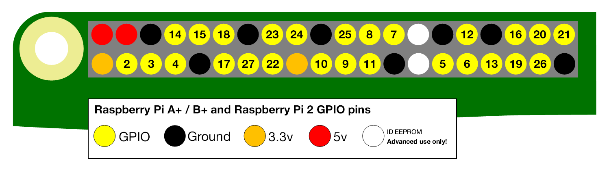
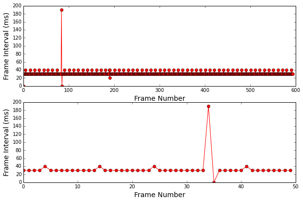

Trigger Camera
This is a Raspberry Pi camera that responds to general purpose digital input-output (GPIO) pulses to start and stop video acquisition during an experiment. During video acquisition, external events such as frame times on a scanning microscope are watermarked on the video and saved to a text file. The camera can be controlled from a Python command prompt, via a web browser, or using a hardware LCD/keypad.
Overview
Background on the Raspberry Pi
The Raspberry Pi is a low cost ($35) computer that runs Linux. In addition to USB, ethernet, and HDMI connectors, the Raspberry Pi has a dedicated camera port and GPIO ports. Both the camera and GPIO ports can be easily programmed using Python. The Raspberry Pi provides an end-to-end open source system. Both the hardware and the software is provided by The Raspberry Pi Foundation and is actively maintained and extended by an active developer community.
Software implementation
The software provided here will run a Raspberry Pi camera as a slave to other devices already in place for an experiment. Once the camera is armed, it will continuously record a circular stream of video in memory. When a digital trigger is received, the the video will begin being saved to disk. In addition to saving the video after a trigger, the video before the trigger will also be saved. This has the distinct advantage of given you a record of what your animal was doing before a trial was started. In many cases, 'bad trials' can be found because there was a lot of movement (or some other abberent event) before a trial began.
Limitations
The Raspberry Pi runs Linux and like other operating systems including Microsoft Windows and Mac OS it is not real time. There will always be unpredictable delays in the detection and generation of GPIO pulses. If the detection of a fast pulse or the timing of a pulse is critical for an experiment it is strongly suggested to use a more precise microcontroller like an Arduino.
See the Analysis section for example Python code to test the limits of this precision.
TTL versus GPIO
Transistor–transistor logic (TTL) and general-purpose input/output (GPIO) are both digital lines that transmit signals by pulsing between a low level (usually 0 or ground) and a high level. Although it is actually rather complicated, the main difference between TTL and GPIO is in the high-level. Most devices with TTL input/output use a 5V high level while the Raspberry Pi GPIO uses a 3.5V high level. The Raspberry Pi 3.5V GPIO are not 5V tolerant. If a 5V TTL is connected directly to a Raspberry Pi 3.5V GPIO, the Raspberry Pi may be burned and no longer function. To connect a 5V TTL device to a Raspberry Pi 3.5V GPIO, the voltage needs to be shifted down to 3.5V. This is easily accomplished with a pre-made level shifter or by hand-wiring a voltage-divider.
Parts list
The total cost should be about $150. These parts are widely available at many different online sellers including: Sparkfun, Adafruit, Element14, and Amazon.
| Quatity | Item | Note | Cost | Link |
|---|---|---|---|---|
| 1 | Raspberry Pi 2 or 3 | Either 2 or 3 is fine | $35-$40 | element14adafruit |
| 1 | Class 10 micro SD card | For the Rasperry system, 16 GB is fine | $10 | link |
| 1 | 5V 2A AC to DC power | Make sure it is >2A and don't buy a cheap one | $6-$8 | link |
| 1 | Pi NoIR Camera | $25-$30 | link | |
| 1 | Pi Camera Ribbon cable (2 meters) | $6 | link | |
| 1 | Pi Camera HDMI extension cable | Optional | $15 | link |
| 1 | USB Memory | To save video, 32GB or 64GB is a good starting point | $10-$15 | link |
| 1 | Voltage level shifter | To convert 5V GPIO to 3.5V | $4 | link |
| 4 | IR LEDS | <900nm is best | $0.95 | 850nm/950nm |
| 4 | xxx Ohm resistors | One for each IR LED | $7 (for 500 pack) | link |
| 1 | 5V relay | To turn higher voltages like 12V on and off | $3 | link |
One option is to buy a Raspberry Pi starter kit from Canakit. These kits include most of the parts needed to get a fully working Raspberry Pi.
The number of IR LEDs is not critical. This will depend on how far away your subject is from the camera. Usually 4 IR LEDs is a good starting point.
Configuring a Raspberry Pi
We are not going to provide a full tutorial here and will assume a functioning Raspberry Pi. Here is a basic to do list to get started.
- Install Raspbian on an SD card and boot the pi
- Configure wired network
- Make sure the camera is installed
- Install the iPython command line interface
- Install required python libraries
- Mount a USB drive at boot
- SMB to mount/share folders with Windows computers
- AFP to mount/share folders with OS X (SMB will also work with OS X)
- StartUpMailer to have the Raspberry Pi email with its IP address when it boots
Building the system
Choosing the triggers
There are two different trigger options. These are set in the config.ini file using useTwoTriggerPins: 1
- Two trigger pins, one for triggering start/stop of video and a second for triggering frames. This is the preferred triggering system. This is used to interface with a Bruker microscope.
- One trigger pin for both trigger and frames. This is used to interface with a microscope running ScanImage software.
Wiring the system
- Connect camera to Raspberry Pi
- Connect signal and ground of GPIO/TTL cables from other equipment to the Raspberry Pi (be sure to convert incoming 5V GPIO to 3.5V)
- Connect IR LEDs to the Raspberry Pi. If LEDs need a lot of power, hook them up with a 5V relay and an external 12V power supply.
**Important:** The Raspberry Pi can only accept GPIO signals at 3.5V. Many devices use 5V for GPIO/TTL signals. Thus, a level shifter is needed to convert 5V to 3.5V. It is easy to make a voltage divider by hand or to buy a pre-made voltage level shifter.

Installing required Python libraries
Python interface
RPi.GPIO
picamera
ConfigParser
Web Interface
flask
flask-socketio
eventlet
pandas
plotly
All these libraries except pandas can be install with pip install xxx where xxx is the library name. Install pandas with
sudo apt-get install python-pandas
Running the camera
Analog video output
The primary interface for controlling the camera is through either Python or a web browser. An added feature is the real-time video can be output on the analog RCA plug on the Raspberry Pi. By connecting this RCA plug to an external video monitor (not a computer monitor), a live video feed can be viewed. Using this live video feed does not interfere with any of the Python or web browser code that interacts with the camera to trigger and save video.
to do: The Raspberry Pi 2/3 uses a 3.5mm audio plug for both audio and composite video out. See here.
Python command line
The iPython command line interface should be used.
With triggercamera.py, the camera can be controlled with a Python command line. Once the camera is armed with 'ArmTrigger()' it will start and stop video recording following GPIO triggers.
import triggercamera
tc=triggercamera.TriggerCamera()
tc.startArm() #arm the camer to respond to triggers
tc.stopArm() #stop the camera from responding to trigger
Additional interface
#start and stop video recording as much as you like
tc.startVideo()
tc.stopVideo()
# single images can be saved every few seconds while video is being recorded
tc.doTimelapse=1
tc.doTimelapse=0
# todo: add interface to control two different LEDs
Web interface
triggercamera_app.py provides a web server allowing the camera to be controlled through a web browser. The web server is run using Flask and provides a REST api as a wrapper to interact with the triggercamera.py Python code.
Run a web server with
python triggercamera_app.py
The server will be available on the local IP address of the machine running the code, in this case '192.168.1.12'. The server will run on port 5010.
The camera can be controlled through a web browser as follows.
http://192.168.1.12:5010/startarm
http://192.168.1.12:5010/stoparm
http://192.168.1.12:5010/startvideo
http://192.168.1.12:5010/stopvideo
http://192.168.1.12:5010/timelapseon
http://192.168.1.12:5010/timelapseoff
http://192.168.1.12:5010/lastimage
LCD and keypad interface
NOT IMPLEMENTED. A hardware interface is provided if an LCD/keypad is attached to the Raspberry Pi.
User configuration
Modify config.ini and restart the camera code
[triggers]
useTwoTriggerPins: True
triggerpin: 4
framepin: 17
[led]
led1pin: 2
led2pin: 3
[camera]
fps: 30
resolution: 640,480
bufferSeconds = 5
watchedpathon: 1
watchedpath: /video
savepath: /video
Output video
Trigger camera saves video in the h264 video format. This is a very efficient video codec that make very small but highly detailed videos. Before these h264 video files can be analyzed, they need to be converted to include the frames per second. This can be done in a number of video editing programs. One way to do this conversion is by using the command line program ffmpeg. Because ffmpeg can be scripted, it is easy to incorporated into most workflows.
srcDir = '/src/dir/with/video'
dstDir = 'dst/dir/for/mp4'
for file in srcDir:
outfile = file.strip('h264') + '.mp4'
ffmpeg -r 25 -i file dstDir+outfile
Output files
In addition to saving video, Trigger Camera also saves a .txt file for each video with frame time stamps.
Here are the first 5 frames of an output .txt file
date,time,seconds,frame
20160520,074319.0,1463744599.61,1
20160520,074319.0,1463744599.65,2
20160520,074319.0,1463744599.68,3
20160520,074319.0,1463744599.71,4
20160520,074319.0,1463744599.74,5
Analysis
Analyzing output .txt files
We have provided Python code to load, analyze and plot the output .txt files. See an example iPython notebook. Because the Raspberry Pi is not configured with a keyboard/mouse/monitor, this code can be run on a different machine using an iPython notebook.
Bring up an iPython web interface
# if your Raspberry Pi is on the network at 'pi60'
cd /Volumes/pi60/Sites/triggercamera/analysis/
ipython notebook
Here is an analysis of the frame interval detected by the Raspberry Pi and a good example of some of the limitations. Using /testing/v2/src/v2.cpp an Arduino output a frame pulse every 31 ms.
- The Raspberry Pi can miss frames
- The Raspberry Pi can detect frames late

Analyzing video
We will provide Python code using OpenCV to load and browse video files.
Add ons
By creating a system with a Raspberry Pi there are a large number of ways to quickly and cheaply extend the system in very useful ways.
- Add an Arduino microcontroller
- Add an LCD/button controller
- Add a touch-screen interface
Troubleshooting
-
Test the camera with
raspistill -o tst.jpg
-
If the camera triggering is erratic or the Raspberry is missing fast pulses, check that all digital lines going to the Raspberry Pi are grounded. It is good practice to connect the Raspberry Pi ground pins to the ground (shield) of any digital lines.
-
If the recorded video changes light-levels erratically, this is usllay due to fluctuations in the power to the Pi. Make sure the Pi has a DC power supply >2 Amps. If additional LEDs are being powered by the Pi, consider breaking these out with their own dedicated power supplies.
-
See this to auto mount an SMB share on boot
http://raspberrypi.stackexchange.com/questions/34444/cant-get-a-cifs-network-drive-to-mount-on-boot
To Do
- Implement a Flask homepage to provide buttons to control camera and feedback during a trial.
- Add control and interface for two LEDs (e.g. IR and white).
- Add a header to output files #fps=xxx;width=xxx;height=xxx
- Write a Python script to batch process a folder of .h264 into .mp4 (with fps)
- try using easydict so i can use'.' notation in code
- Add a physical emergency 'stop' button